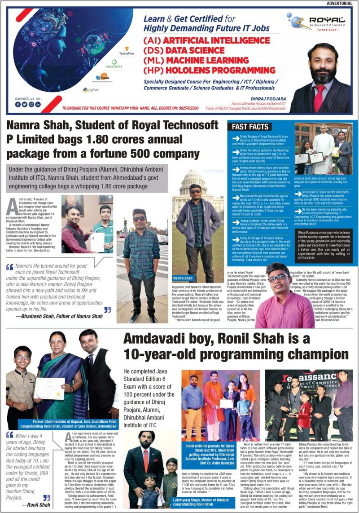
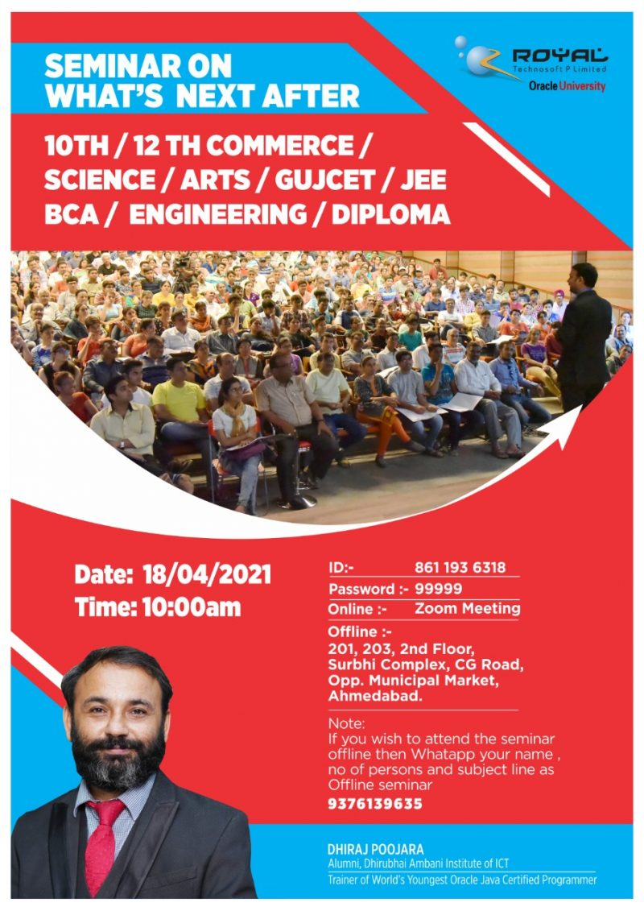

Royal Technosoft Pvt. Ltd. provides Global Software Solutions and their affiliated undertakings. In India’s Ahmedabad, we have a software development team. Both the Gandhinagar branch and Surat where we are currently conducting business. Furthermore, our experts completed a number of government projects for India. Our goal is to comprehend the business goals of our clients and be seen as one of their most organizational aspects. Our primary goal is to create solutions to clients that are quick, simple, and low-effort. Process to ensure prompt response without compromising quality is something we always do. With the support of our effective SEO (Search Engine Optimization) campaigns, we are also equipped to market your products and services to a wider audience. We make every effort to maintain long-term client relationships, and as a result, 24 hour assistance is not just our company strategy but also a critical aspect. Short-term courses and certificates programs are offered by Royal Technosoft Pvt. Ltd. The long-term programs include areas like web development, mobile development, financial accountancy, computer application and programming, information and technology, multimedia, and web-designing in addition to comprehensive learning. Meet our trainers and developers any day between 07:00 – 19:00.


Ethical Hacking
Development & Training For SQL
Development & Training For C#
Development & Training For Python
Development & Training For Ruby on Rails
Development & Training For Android
Development & Training For iPhone
Development & Training For Hadoop